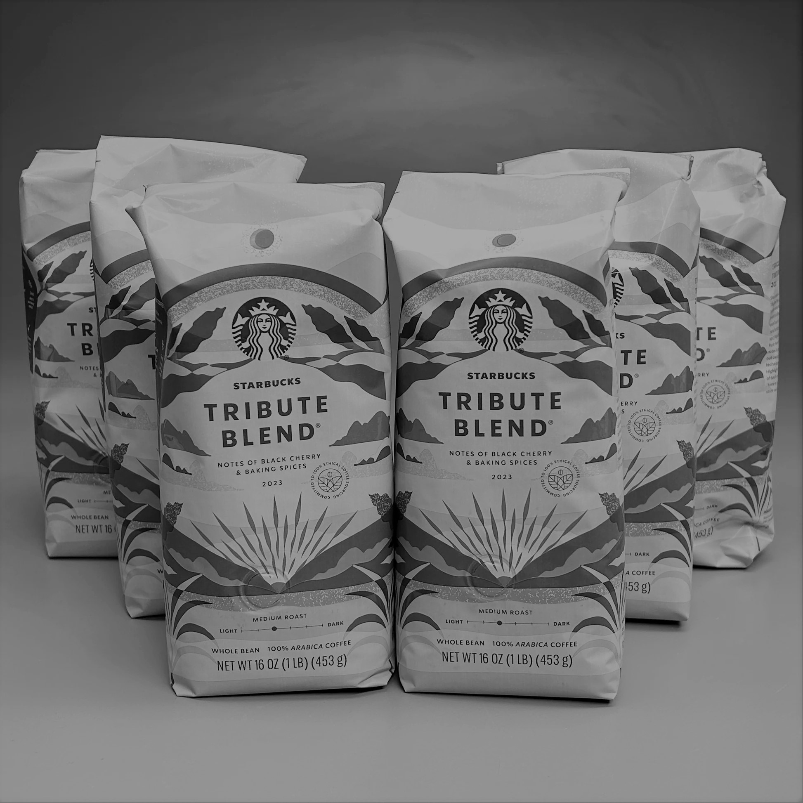

Starbucks created Tribute Blend® to celebrate the company’s 40th anniversary, to honor customers and partners, and to recognize the accomplishments of the coffee producers and roasters.
Tribute Blend® combines four of customers’ all-time favorite coffees from all three growing regions. The Sun-Dried Ethiopia coffee, with an exotic flourish of dark cherry, is from Africa. Aged Sumatra comes from the Asia/Pacific region, featuring deep notes of cedar and sweet. Also originating from the Asia/Pacific area is the Papua New Guinea coffee, a deep-toned coffee with juicy herbal taste. Colombia coffee, with balanced and nutty tasting notes, hails from Latin America.
Starbucks does a pretty bad job at describing their coffees. Most of the time that's ok, because their coffees aren't always that interesting. Then there's a coffee that you enjoy, and they write the following: Tasting Notes: Spicy and full-bodied with berry and dark cherry notes Enjoy th:Outrageous Oatmeal Cookies and a long-time friend. OriginMulti Region Blend